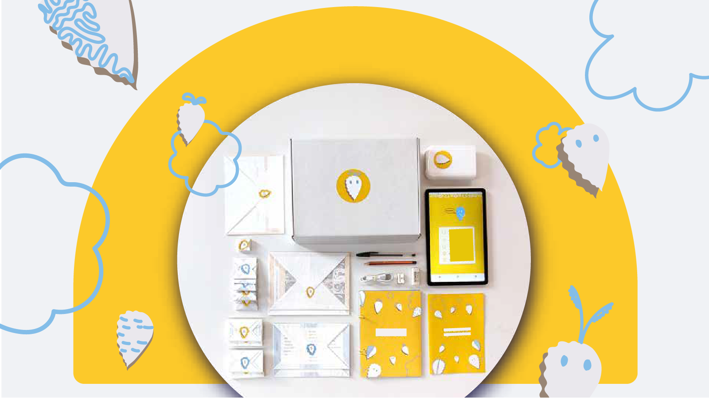

Seeds of Reflection
Supporting meaningful family conversations about gender, stereotypes, and AI through reflection and play.

Seeds of Reflection is a cultural probe designed by Irene Zanardi and Shana Dedò that supports conversations about gender bias in AI-generated imagery within families. The toolkit was developed through research on how parents and children can critically engage with generative AI and its representations of people. It combines reflection, discussion, play, and creative activities to help participants explore stereotypes, representation, and the ways AI systems shape everyday understandings of gender.
The toolkit is designed for families with children and can be used at home, in workshops, educational settings, or research activities. It includes ten activities: five self-reflection activities for parents and five collaborative activities for the whole family. The activities can be completed over multiple sessions or adapted to fit a single workshop, allowing participants to engage at their own pace.
Start by reading the instruction leaflet, which provides guidance for each activity as well as prompts to support reflection and discussion. You can then begin with the parent-focused activities, which invite caregivers to document experiences, assumptions, and reflections related to gender and technology. These individual reflections inform a second phase of shared family activities, including discussions, games, and creative exercises using AI-generated images. The toolkit requires minimal preparation and is designed to support open-ended conversations, encouraging exploration and dialogue rather than right or wrong answers.